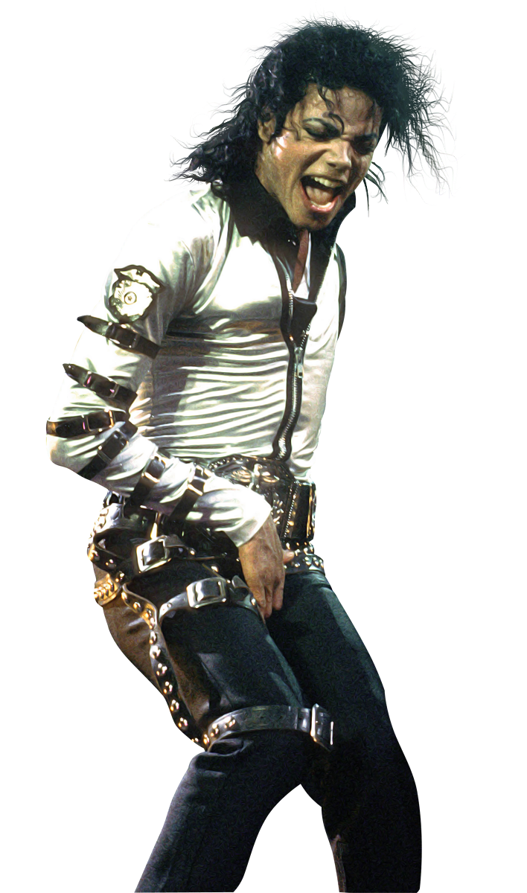
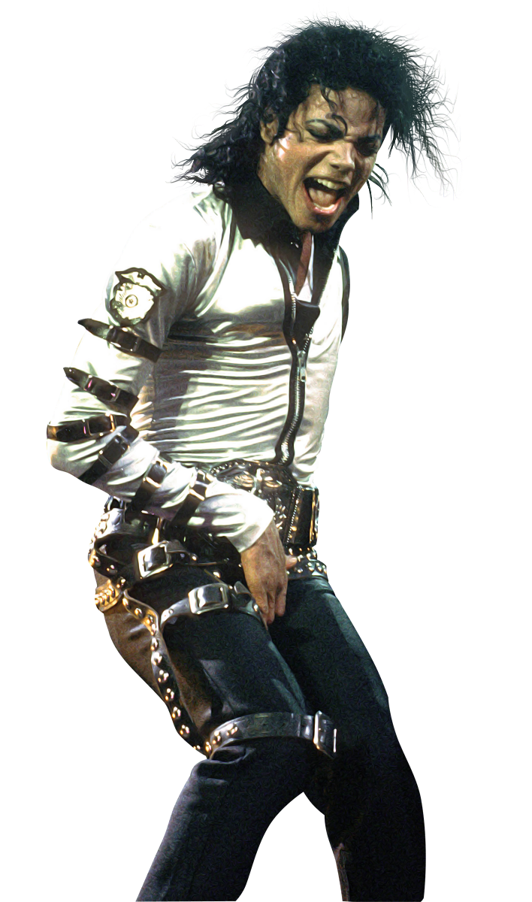
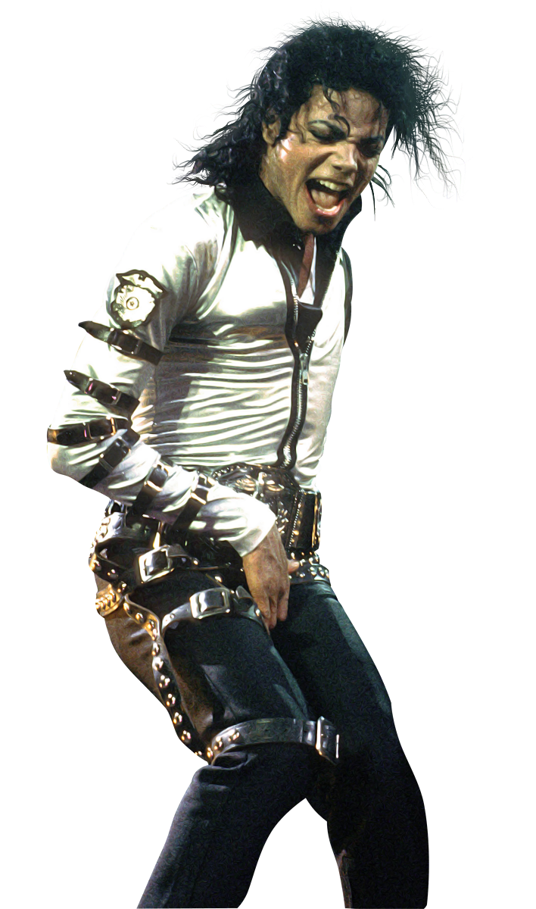
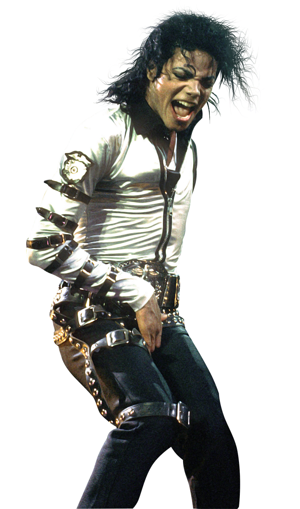

WEMBLE 1988
 



Michael Joseph Jackson was an American singer, songwriter, dancer, and philanthropist. Dubbed the "King of Pop", he is regarded as one of the most significant cultural figures of the 20th century. Over a four-decade career, his contributions to music, dance, and fashion, along with his publicized personal life, made him a global figure in popular culture. Jackson influenced artists across many music genres; through stage and video performances, he popularized complicated dance moves such as the moonwalk, to which he gave the name, as well as the robot.
The eighth child of the Jackson family, Jackson made his public debut in 1964 with his older brothers Jackie, Tito, Jermaine, and Marlon as a member of the Jackson 5 (later known as the Jacksons). Jackson began his solo career in 1971 while at Motown Records. He became a solo star with his 1979 album Off the Wall. His music videos, including those for "Beat It", "Billie Jean", and "Thriller" from his 1982 album Thriller, are credited with breaking racial barriers and transforming the medium into an artform and promotional tool.
This particular concert took place on July 16, 1988, at Wembley Stadium in Wembley, London, to a sold-out crowd of 72,000, which included Diana, Princess of Wales and Charles, Prince of Wales. Jackson originally removed "Dirty Diana" from this night's performance, worried that he would offend Princess Diana or the royal family. However, the princess informed Jackson it was her favorite song. In an interview, Jackson stated that he was unable to put the song into the set, which led some fans to believe "Dirty Diana" was not performed on July 16. However, leaked audio snippets prove that the song was re-added to the setlist.